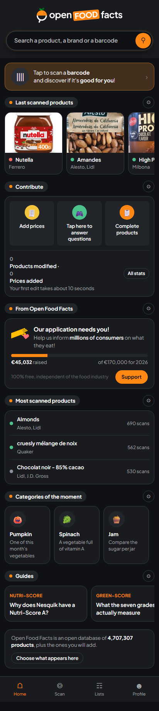

4,684,418Products
36,124Contributors
100%Open data

Open Food Facts on your phone
4.6 million products, one scan away
- point the camera at a barcode and get the answer before it goes in the basket
- the criteria you set here travel with you, on every product you scan
- no cost, no account, no ads, and the whole app is open source
Get it on
Google Play
App Store
F-Droid
APK
Point your camera here
Help us inform millions of consumers on what they eat
- keeps the database open and free for everyone
- pays the infrastructure and a small permanent team
- keeps Open Food Facts independent of the food industry
€45,032 raisedof €170,000
I support
Most scanned products
What people around you actually put in the basket.

Almonds
Alesto, Lidl
Matches your criteria · 690 scans

Nutella
Ferrero
Poor match, 3% · 384 scans

High Protein Schoko Pudding
Milbona, Lidl
Matches your criteria · 352 scans
Matching with your preferences
Nutri-Score · Green-Score · Ultra-processed foods. No account needed, kept in this browser.
Edit your preferences
Sort by match
Help improve Open Food Facts
Six products scanned near you that are missing one thing each.

Donat
26% complete
No category, so no Green-Score
Add a category10 s

Cedevita
49% complete
Front photo is the Croatian one
Add the English front15 s
no photoyet
20476557
8% complete
No photo, no nutrition, no category
Take the front photo10 s
Nutella
Ferrero · 79% complete
Green-Score not computed
Add a precise category10 s

The RED Edition Watermelon
Red Bull · 48% complete
No nutrition facts
Photograph the label30 s
no photoyet
Greek Yog 10% fat - Unfi
M And S · 30% complete
No photo and no category
Take the front photo10 s
1,153 products scanned in Slovenia are missing a category ›